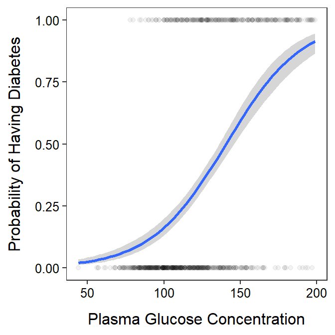

Health service professionals working with the Pima peoples were interested in developing a model that might be used to predict diabetes for women of Pima heritage from other more readily measured variables. To begin this process the researchers derived a dataset from data housed by the National Institute of Diabetes and Digestive and Kidney Diseases for women of Pima heritage that were at least 21 years old. Here I will use plasma glucose concentration (Glucose) to possibly develop a model to predict the presence of diabetes or not.
The specific hypotheses for this analysis are:
H0: “no relationship between having diabetes and plasma glucose level”
HA: “is a relationship between having diabetes and plasma glucose level”
A total of 763 women were included in this study. The women are all related in the sense that they are all of Pima heritage and, presumably, from similar areas in Arizona. However, there is no indication that all or even a vast majority of the women are connected in any way beyond that (e.g., familial ties, etc.). Thus, independence is likely met.
There is considerable variability in the data but the fitted-line plot indicates that the model captures the general increase in the probability of having diabetes with the increase in plasma glucose level (see fitted line plot below).
There does appear to be a significant relationship between the probability of having diabetes with the increase in plasma glucose level (LRT: p<0.00005). In fact it appears that the odds of having diabetes is between 1.035 and 1.048 times greater when the plasma glucose concentration increases by 1 unit. One unit of increase in glucose concentration does not appear to be a substantial amount, so stated differently, the odds of having diabetes is between 1.413 and 1.602 times greater when the plasma glucose concentration increases by 10 unit. In still other words, the odds of having diabetes is between 41.3 and 60.2% greater when the plasma glucose concentration increases by 10 unit.
As an example, the probability of having diabetes for a woman with a glucose level of 100 is between 0.129 and 0.194. In addition, the glucose level where 50% of females have diabetes is between 135.9 and 145.8.
These results indicated a significant relationship between the probability of having diabetes and plasma glucose level for women older the 21 years and of Pima heritage. I also demonstrated how the model could be used to predict the probability that a woman has diabetes give her plasma glucose level.
predProb <- function(x,alpha,beta) exp(alpha+beta*x)/(1+exp(alpha+beta*x))
predX <- function(p,alpha,beta) (log(p/(1-p))-alpha)/beta
db <- read.csv("https://raw.githubusercontent.com/droglenc/NCMTH207/gh-pages/modules/ce/data/diabetes.csv")
db <- filter(db,Glucose>0)
nrow(db)[1] 763logreg <- glm(Outcome~Glucose,data=db,family=binomial)
anova(logreg,test="LRT")Analysis of Deviance Table
Model: binomial, link: logit
Response: Outcome
Terms added sequentially (first to last)
Df Deviance Resid. Df Resid. Dev Pr(>Chi)
NULL 762 986.70
Glucose 1 200.14 761 786.56 < 2.2e-16b_logreg <- car::Boot(logreg)
cbind(Ests=coef(logreg),confint(b_logreg,type="perc")) Ests 2.5 % 97.5 %
(Intercept) -5.71508764 -6.69930706 -4.91163037
Glucose 0.04063362 0.03431723 0.04810239p_prob <- predProb(100,b_logreg$t[,1],b_logreg$t[,2])
( ci_prob <- quantile(p_prob,c(0.025,0.975),type=1) ) 2.5% 97.5%
0.1294508 0.1928532 p_x <- predX(0.50,b_logreg$t[,1],b_logreg$t[,2])
( ci_x <- quantile(p_x,c(0.025,0.975),type=1) ) 2.5% 97.5%
135.8575 145.8956 ggplot(data=db,mapping=aes(x=Glucose,y=Outcome)) +
geom_point(alpha=0.05) +
geom_smooth(method="glm",method.args=list(family=binomial)) +
labs(x="Plasma Glucose Concentration",
y="Probability of Having Diabetes") +
theme_NCStats()`geom_smooth()` using formula 'y ~ x'